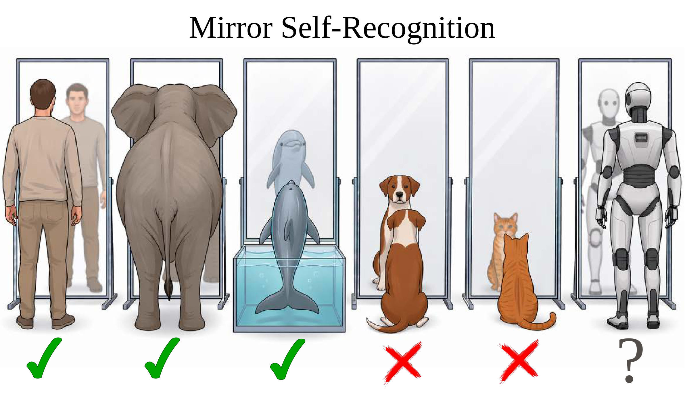
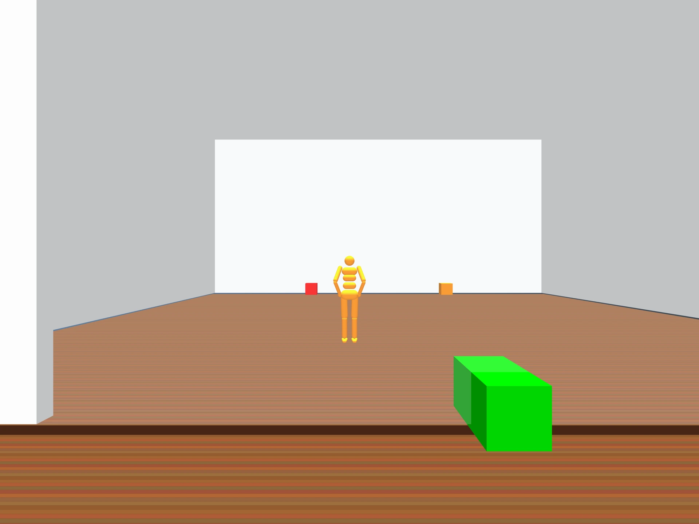
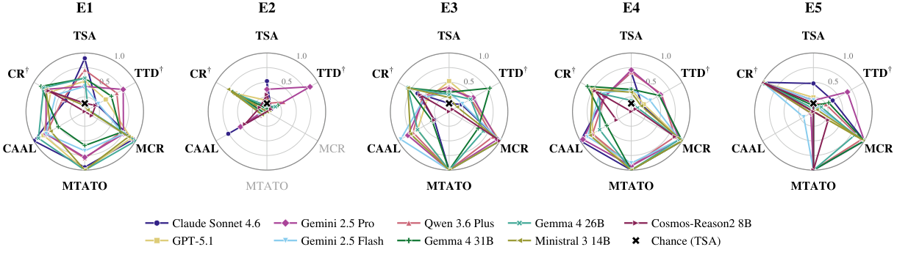
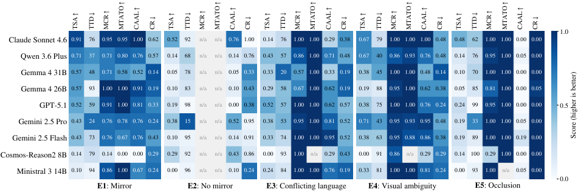
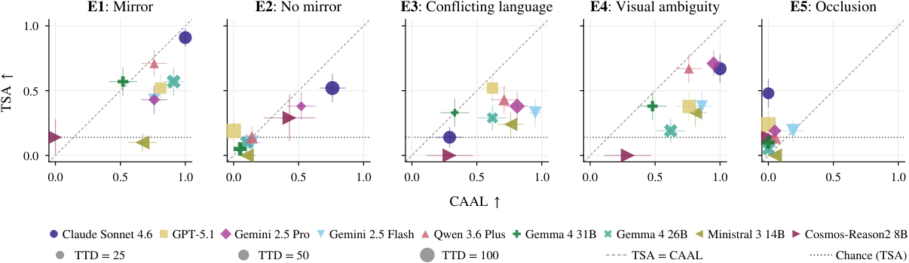
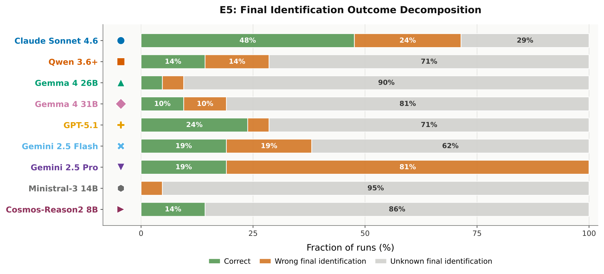

on the Wall
Can VLM Agents Tell Who They Are at All?
1 Fondazione Bruno Kessler · 2 University of Padova
* Equal contribution † Equal supervision

Abstract
In the animal kingdom, mirror self-recognition is a canonical probe of higher-order cognition, emerging only in some species. We ask whether an analogous functional capability emerges in embodied vision-language model (VLM) agents: can they recognize themselves in a mirror? We introduce a controlled 3D benchmark where a first-person VLM agent must infer a hidden body attribute from its reflection and select the matching target, while avoiding self–other misattribution. To separate mirror-grounded self-identification from shortcuts, we test mirror removal, misleading cues, and occluded reflections. We also evaluate the decision process through mirror seeking, temporal ordering, self-attribution, and reasoning–action consistency. Our experiments show that mirror-based self-identification emerges mainly in stronger VLMs. These models can use reflected evidence for action, whereas weaker models often inspect the mirror but fail to extract self-relevant information or misattribute their reflection. Language–vision conflict further shows that self-referential language alone is not evidence of grounded self-identification. Overall, mirror-based evaluation provides a diagnostic for whether embodied self-grounding is causally rooted in perception and action rather than priors, prompt compliance, or confabulation.
Mirror-guided self-identification
The agent’s true body color is never directly visible from the egocentric view and must be inferred indirectly from perceptual evidence in the scene.

Qualitative examples · E1
Gemini 2.5 Pro
Task outcomes and decision processes
High mirror consultation does not guarantee grounded self-identification.
| Model | TSA ↑ | TTD ↓ | MCR ↑ | MTATO ↑ | CAAL ↑ | CR ↓ |
|---|
TSA: task success accuracy · TTD: time-to-decision · MCR: mirror consultation rate · MTATO: mirror-then-act temporal ordering · CAAL: color attribution accuracy in language · CR: confabulation rate.
Primary model–condition pairs: 21 episodes. Additional Cosmos-Reason2 results and full evaluation details are reported in the paper.
Complementary visual analyses
Here, we provide complementary visual analyses that highlight cross-experiment structure, action–attribution dissociations, and the distinct failure modes of E5.
Behavioral self-recognition profiles across task variants
PDF ↗
Model performance across experiments and metrics
PDF ↗
Task success versus self-attribution across experiments
PDF ↗
Completion gap across experiments
PDF ↗![Completion gap across experiments. Each cell reports TSA_complete − TSA for one model in one experimental condition. Larger values indicate models that are substantially more accurate when conditioning only on episodes that terminate with done, and therefore suggest that part of the observed failure arises from unstable completion or commitment policy rather than uniformly incorrect task resolution. This pattern is strongest for Ministral 3 14B, especially in E1, E3, and E4, and is also visible for several mid-performing models in E3. By contrast, the strongest models show near-zero gaps in most conditions, indicating that their observed TSA more closely reflects final-decision quality.](assets/Tsa_Complete-Tsa.png)
Final self-identification outcomes in E5
PDF ↗
Conclusions
We introduced a controlled benchmark for functional mirror-guided self-identification in embodied VLM agents. Our results show that this capability can emerge, but it remains partial, fragile, and strongly model-dependent. Performance is highest in the clean mirror condition, but drops when mirror evidence is removed, when language conflicts with perception, and under self–other ambiguity or cluttered reflected scenes. This supports the causal role of reflected visual evidence while also showing that success in the basic condition should not be overinterpreted as robust self-awareness-like behavior.
Across conditions, the main pattern is a dissociation between accessing evidence and using it. Many agents consult the mirror, often before acting, yet still fail to extract the relevant self-attribute or translate it into the correct final decision. Language introduces a second dissociation: agents can produce plausible or even correct self-attributions without reliable perceptual grounding, as shown by confabulation in the no-mirror control and by the gap between CAAL and TSA under misleading language. Overall, the strongest evidence for mirror-grounded self-identification appears only when task success, mirror consultation, temporal ordering, and correct self-attribution align.
Limitations and future work
This benchmark evaluates embodied self-referential grounding through mirror-guided tasks; it does not assess philosophical self-awareness. VLMs may partly rely on pretraining priors about mirrors and reflections.
The evaluation is restricted to body color, discrete navigation actions, and first-person RGB observations with textual history, without continuous sensorimotor coupling. Generalization to other attributes remains untested, and the current evidence does not establish that successful agents exploit action–reflection synchrony. Each primary model–condition pair contains 21 episodes, limiting estimate precision and the strength of comparisons between models with similar scores.
Read the full discussion in the paper ↗BibTeX
@inproceedings{ziliotto2026mirror,
title = {Mirror, Mirror on the Wall: Can VLM Agents Tell Who They Are at All?},
author = {Ziliotto, Filippo and Beneduce, Ciro and Lepri, Bruno and Serafini, Luciano and Luca, Massimiliano and Campari, Tommaso},
booktitle = {Advances in Neural Information Processing Systems},
year = {2026},
eprint = {2605.08816},
archivePrefix = {arXiv},
url = {https://arxiv.org/abs/2605.08816}
}